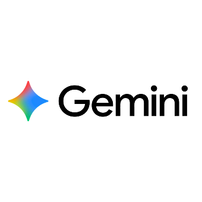

Weet Precies Hoe Uw AI Presteert
Ontdek NuAI moet meetbaar zijn, niet mysterieus. Onze Evaluatietool brengt continue monitoring en bruikbare inzichten naar elke fase van uw AI-levenscyclus, van vroeg testen tot productie. Het zorgt ervoor dat uw systemen nauwkeurig, veilig en afgestemd op bedrijfsdoelstellingen blijven.
Hoe de Evaluatietool Werkt
Realtime Monitoring en Feedbacklussen
Volg modelnauwkeurigheid, prestaties en compliance in realtime. Detecteer drift of bias vroegtijdig en onderneem actie voordat het gebruikers of resultaten beïnvloedt.
Resultaat: Houd uw AI betrouwbaar, voorspelbaar en compliant.
Van Technische Statistieken naar Zakelijke Inzichten
We gaan verder dan nauwkeurigheidsscores. Onze tool vertaalt technische prestaties naar zakelijke indicatoren, zodat besluitvormers de impact van AI op tastbare resultaten kunnen meten.
Resultaat: Stem AI-succes af op organisatiedoelen, niet alleen op datapunten.
Geïntegreerde Risicodetectie
Identificeer potentiële risico's voordat ze escaleren. Ingebouwde anomaliedetectie en veiligheidscontroles zorgen ervoor dat AI-gedrag binnen gedefinieerde grenzen blijft.
Resultaat: Behoud vertrouwen, transparantie en controle op elk niveau.
Vertrouwd en Geïntegreerd met Toonaangevende AI-Platforms

Bedrijfswaarde
Geselecteerde Evaluatietool Casestudies
FAQ
Waarom moeten AI-systemen continu worden gemonitord?
Ervoor zorgen dat AI nauwkeurig, veilig en afgestemd op bedrijfsresultaten blijft via continue monitoring helpt problemen vroegtijdig te detecteren, zodat systemen betrouwbaar en voorspelbaar blijven.
Wat kan de Evaluatietool in realtime bijhouden?
Het houdt de nauwkeurigheid, prestaties en compliance van modellen in realtime bij. Het detecteert ook vroegtijdig drift of bias zodat teams actie kunnen ondernemen voordat de resultaten worden beïnvloed.
Hoe vertaalt de tool technische AI-statistieken naar zakelijke inzichten?
Het gaat verder dan nauwkeurigheidsscores door technische prestatiegegevens om te zetten in bedrijfsniveau-indicatoren. Dit stelt besluitvormers in staat te begrijpen hoe AI tastbare resultaten beïnvloedt.
Waarom is het belangrijk voor organisaties om AI-prestaties te koppelen aan zakelijke resultaten?
Connecting performance to outcomes ensures AI success aligns with organizational goals, not just technical metrics. This helps leaders evaluate whether AI is contributing meaningful business value.

Laatst bijgewerkt: K4, 2025